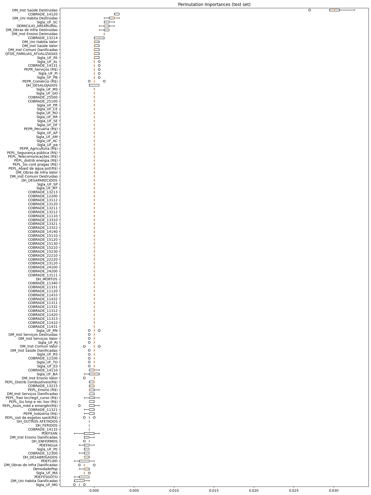

Variáveis agregadas (2018 a 2024)#
Bibliotecas e base de dados#
Show code cell source
# Importar bibliotecas
import pandas as pd
from sklearn.model_selection import GridSearchCV
import xgboost as xgb
from sklearn.pipeline import Pipeline
from imblearn.over_sampling import SMOTE
from sklearn.model_selection import train_test_split
from sklearn import metrics
from skopt import BayesSearchCV
from sklearn import metrics
from sklearn.preprocessing import RobustScaler
from sklearn.metrics import ConfusionMatrixDisplay
from sklearn.inspection import permutation_importance
import matplotlib.pyplot as plt
#Estilizar conteúdo
import warnings
warnings.simplefilter(action='ignore', category=FutureWarning)
pd.set_option('display.max_rows', None)
pd.set_option('display.max_columns', None)
pd.set_option('display.float_format', '{:.2f}'.format)
def estilo_tabelas(df, max_altura='300px', casas_decimais=3):
return (
df.style.set_table_styles(
[
{'selector': 'thead th', 'props': [('font-size', '12px'), ('text-align', 'center'), ('border-bottom', '2px solid #007BFF')]},
{'selector': 'td', 'props': [('font-size', '10px'), ('text-align', 'center'), ('max-height', '40px'), ('white-space', 'nowrap'), ('text-overflow', 'ellipsis'), ('overflow', 'hidden'), ('max-width', '100px')]},
{'selector': 'tr:nth-child(odd)', 'props': [('background-color', '#ffffff')]},
{'selector': 'table', 'props': [('width', '90%'), ('margin-left', 'auto'), ('margin-right', 'auto'), ('border-collapse', 'collapse')]},
{'selector': 'td, th', 'props': [('border', '1px solid #666')]}, # Bordas cinza escuro
]
).set_properties(
**{'border-color': 'darkgray', 'border-style': 'solid', 'border-width': '1px'}
).set_table_attributes(
f'style="height:auto; overflow:auto; max-height:{max_altura}; display:block;"'
).format(
precision=casas_decimais
)
)
# Importar a base de dados
df_eventos_2018_2024_modelo2 = pd.read_csv(
"https://raw.githubusercontent.com/brunagmoura/PrevisorReconhecimento/refs/heads/main/df_eventos_2018_2024_modelo2.csv",
sep=';',
decimal=',',
)
estilo_tabelas(df_eventos_2018_2024_modelo2.head(5))
---------------------------------------------------------------------------
XGBoostError Traceback (most recent call last)
Cell In[1], line 4
2 import pandas as pd
3 from sklearn.model_selection import GridSearchCV
----> 4 import xgboost as xgb
5 from sklearn.pipeline import Pipeline
6 from imblearn.over_sampling import SMOTE
File ~/PrevisorReconhecimento/.venv/lib/python3.9/site-packages/xgboost/__init__.py:6
1 """XGBoost: eXtreme Gradient Boosting library.
2
3 Contributors: https://github.com/dmlc/xgboost/blob/master/CONTRIBUTORS.md
4 """
----> 6 from . import tracker # noqa
7 from . import collective, dask
8 from .core import (
9 Booster,
10 DataIter,
(...)
15 build_info,
16 )
File ~/PrevisorReconhecimento/.venv/lib/python3.9/site-packages/xgboost/tracker.py:9
6 from enum import IntEnum, unique
7 from typing import Dict, Optional, Union
----> 9 from .core import _LIB, _check_call, make_jcargs
12 def get_family(addr: str) -> int:
13 """Get network family from address."""
File ~/PrevisorReconhecimento/.venv/lib/python3.9/site-packages/xgboost/core.py:269
265 return lib
268 # load the XGBoost library globally
--> 269 _LIB = _load_lib()
272 def _check_call(ret: int) -> None:
273 """Check the return value of C API call
274
275 This function will raise exception when error occurs.
(...)
281 return value from API calls
282 """
File ~/PrevisorReconhecimento/.venv/lib/python3.9/site-packages/xgboost/core.py:222, in _load_lib()
220 if not lib_success:
221 libname = os.path.basename(lib_paths[0])
--> 222 raise XGBoostError(
223 f"""
224 XGBoost Library ({libname}) could not be loaded.
225 Likely causes:
226 * OpenMP runtime is not installed
227 - vcomp140.dll or libgomp-1.dll for Windows
228 - libomp.dylib for Mac OSX
229 - libgomp.so for Linux and other UNIX-like OSes
230 Mac OSX users: Run `brew install libomp` to install OpenMP runtime.
231
232 * You are running 32-bit Python on a 64-bit OS
233
234 Error message(s): {os_error_list}
235 """
236 )
237 _register_log_callback(lib)
239 def parse(ver: str) -> Tuple[int, int, int]:
XGBoostError:
XGBoost Library (libxgboost.dylib) could not be loaded.
Likely causes:
* OpenMP runtime is not installed
- vcomp140.dll or libgomp-1.dll for Windows
- libomp.dylib for Mac OSX
- libgomp.so for Linux and other UNIX-like OSes
Mac OSX users: Run `brew install libomp` to install OpenMP runtime.
* You are running 32-bit Python on a 64-bit OS
Error message(s): ["dlopen(/Users/brunamoura/PrevisorReconhecimento/.venv/lib/python3.9/site-packages/xgboost/lib/libxgboost.dylib, 0x0006): Library not loaded: @rpath/libomp.dylib\n Referenced from: <F2F42313-BF4F-3B95-A853-AE1DE94D4C87> /Users/brunamoura/PrevisorReconhecimento/.venv/lib/python3.9/site-packages/xgboost/lib/libxgboost.dylib\n Reason: tried: '/opt/homebrew/opt/libomp/lib/libomp.dylib' (no such file), '/System/Volumes/Preboot/Cryptexes/OS/opt/homebrew/opt/libomp/lib/libomp.dylib' (no such file), '/opt/homebrew/opt/libomp/lib/libomp.dylib' (no such file), '/System/Volumes/Preboot/Cryptexes/OS/opt/homebrew/opt/libomp/lib/libomp.dylib' (no such file)"]
Ajustes da base de dados#
Show code cell source
# Remover linhas com dados ausentes
df_eventos_2018_2024_modelo2 = df_eventos_2018_2024_modelo2.dropna()
estilo_tabelas(df_eventos_2018_2024_modelo2.head(5))
# Remover linhas com todos os dados informados = 0.
colunas_informados = [
'DH_MORTOS', 'DH_FERIDOS', 'DH_ENFERMOS', 'DH_DESABRIGADOS', 'DH_DESALOJADOS',
'DH_DESAPARECIDOS', 'DH_OUTROS AFETADOS',
'DM_Uni Habita Danificadas', 'DM_Uni Habita Destruidas', 'DM_Uni Habita Valor',
'DM_Inst Saúde Danificadas', 'DM_Inst Saúde Destruidas', 'DM_Inst Saúde Valor',
'DM_Inst Ensino Danificadas', 'DM_Inst Ensino Destruidas', 'DM_Inst Ensino Valor',
'DM_Inst Serviços Danificadas', 'DM_Inst Serviços Destruidas', 'DM_Inst Serviços Valor',
'DM_Inst Comuni Danificadas', 'DM_Inst Comuni Destruidas', 'DM_Inst Comuni Valor',
'DM_Obras de Infra Danificadas', 'DM_Obras de Infra Destruidas', 'DM_Obras de Infra Valor',
'PEPL_Assis_méd e emergên(R$)', 'PEPL_Abast de água pot(R$)',
'PEPL_sist de esgotos sanit(R$)', 'PEPL_Sis limp e rec lixo (R$)', 'PEPL_Sis cont pragas (R$)',
'PEPL_distrib energia (R$)', 'PEPL_Telecomunicações (R$)', 'PEPL_Tran loc/reg/l_curso (R$)',
'PEPL_Distrib combustíveis(R$)', 'PEPL_Segurança pública (R$)', 'PEPL_Ensino (R$)',
'PEPR_Agricultura (R$)', 'PEPR_Pecuária (R$)', 'PEPR_Indústria (R$)', 'PEPR_Comércio (R$)',
'PEPR_Serviços (R$)'
]
df_eventos_2018_2024_modelo2 = df_eventos_2018_2024_modelo2[
~(df_eventos_2018_2024_modelo2[colunas_informados] == 0).all(axis=1)
]
Show code cell source
# Balanceamento da variável target
status_counts = df_eventos_2018_2024_modelo2['Status'].value_counts()
print("\nBalanceamento da variável 'Status':")
display(status_counts)
Balanceamento da variável 'Status':
Status
0 7380
1 590
Name: count, dtype: int64
Modelo sem balanceamento#
Treino e teste#
Show code cell source
X_2018_2024_modelo2 = df_eventos_2018_2024_modelo2.drop('Status', axis=1)
y_2018_2024_modelo2 = df_eventos_2018_2024_modelo2['Status']
X_train_2018_2024_modelo2, X_test_2018_2024_modelo2, y_train_2018_2024_modelo2, y_test_2018_2024_modelo2 = train_test_split(X_2018_2024_modelo2, y_2018_2024_modelo2, test_size=0.2, random_state=1, stratify=y_2018_2024_modelo2)
Treinamento sem balanceamento#
Inicialmente, o modelo foi treinado sem balanceamento e utilizando-se a busca de hiperparâmetros bayesiana com o objetivo de testar os hiperparâmetros. O teste foi feito a partir dos hiperparâmetros sugeridos por Thakur (2020).
Show code cell source
# Definir hiperparâmetros para a busca bayesiana
param_grid_bayes = {
'xgb__eta': [0.01, 0.015, 0.025, 0.05, 0.1], # Taxa de aprendizado
'xgb__gamma': [0.05, 0.1, 0.3, 0.5, 0.7, 0.9, 1.0], # Redução mínima da perda
'xgb__max_depth': [3, 5, 7, 9, 12, 15, 17, 25], # Profundidade da árvore
'xgb__min_child_weight': [1, 3, 5, 7], # Peso mínimo para divisão do nó
'xgb__subsample': [0.6, 0.7, 0.8, 0.9, 1.0], # Subamostragem para treinamento
'xgb__colsample_bytree': [0.6, 0.7, 0.8, 0.9, 1.0], # Subamostragem de colunas
'xgb__lambda': [0.01, 0.1, 1.0], # Regularização L2
'xgb__alpha': [0, 0.1, 0.5, 1.0] # Regularização L1
}
# Criar pipeline com RobustScaler e XGBoost Classifier
pipeline_xgb = Pipeline([
('scaler', RobustScaler()), # Alterado para RobustScaler
('xgb', xgb.XGBClassifier(random_state=1, eval_metric='logloss'))
])
# Realizar a busca bayesiana com validação cruzada
bayes_search_xgb = BayesSearchCV(
pipeline_xgb,
search_spaces=param_grid_bayes,
n_iter=30,
cv=3,
scoring='f1_weighted',
n_jobs=-1,
random_state=1
)
# Ajustar a busca bayesiana ao conjunto de treino
bayes_search_xgb.fit(X_train_2018_2024_modelo2, y_train_2018_2024_modelo2)
# Melhor modelo encontrado
best_xgb_model = bayes_search_xgb.best_estimator_
# Exibir os melhores hiperparâmetros
print(f"Melhores hiperparâmetros: {bayes_search_xgb.best_params_}")
# Fazer previsões com o conjunto de teste
y_pred_xgb = best_xgb_model.predict(X_test_2018_2024_modelo2)
# Relatório de classificação
classification_report_xgb = metrics.classification_report(y_test_2018_2024_modelo2, y_pred_xgb, digits=6, target_names=['Não reconhecido', 'Reconhecido'])
print('Classification report para XGBoost: \n')
print(classification_report_xgb)
Melhores hiperparâmetros: OrderedDict([('xgb__alpha', 0), ('xgb__colsample_bytree', 0.9), ('xgb__eta', 0.05), ('xgb__gamma', 1.0), ('xgb__lambda', 1.0), ('xgb__max_depth', 9), ('xgb__min_child_weight', 3), ('xgb__subsample', 1.0)])
Classification report para XGBoost:
precision recall f1-score support
Reconhecido 0.939258 0.995257 0.966447 1476
Não reconhecido 0.766667 0.194915 0.310811 118
accuracy 0.936010 1594
macro avg 0.852962 0.595086 0.638629 1594
weighted avg 0.926482 0.936010 0.917912 1594
Show code cell source
ConfusionMatrixDisplay.from_estimator(best_xgb_model, X_test_2018_2024_modelo2, y_test_2018_2024_modelo2, values_format='d', cmap='Blues', display_labels=['Não reconhecido', 'Reconhecido'])
<sklearn.metrics._plot.confusion_matrix.ConfusionMatrixDisplay at 0x117cb9c50>
Modelo com balanceamento SMOTE#
Treinamento do modelo com balanceamento SMOTE e utilizando-se a busca de hiperparâmetros bayesiana com o objetivo de testar os hiperparâmetros. O teste foi feito a partir dos hiperparâmetros sugeridos por Thakur (2020).
Treino e teste#
Show code cell source
X_smote = df_eventos_2018_2024_modelo2.drop('Status', axis=1)
y_smote = df_eventos_2018_2024_modelo2['Status']
X_train_smote, X_test_smote, y_train_smote, y_test_smote = train_test_split(X_smote, y_smote, test_size=0.2, random_state=1, stratify=y_smote)
Treinamento com balanceamento SMOTE#
Show code cell source
# Aplicar SMOTE apenas no conjunto de treino
smote = SMOTE(random_state=1)
X_train_smote, y_train_smote = smote.fit_resample(X_train_smote, y_train_smote)
# Definir hiperparâmetros para a busca bayesiana
param_grid_bayes = {
'xgb__eta': [0.01, 0.015, 0.025, 0.05, 0.1],
'xgb__gamma': [0.05, 0.1, 0.3, 0.5, 0.7, 0.9, 1.0],
'xgb__max_depth': [3, 5, 7, 9, 12, 15, 17, 25],
'xgb__min_child_weight': [1, 3, 5, 7],
'xgb__subsample': [0.6, 0.7, 0.8, 0.9, 1.0],
'xgb__colsample_bytree': [0.6, 0.7, 0.8, 0.9, 1.0],
'xgb__lambda': [0.01, 0.1, 1.0],
'xgb__alpha': [0, 0.1, 0.5, 1.0]
}
# Criar pipeline com RobustScaler e XGBoost Classifier
pipeline_xgb_smote = Pipeline([
('scaler', RobustScaler()), # Usando RobustScaler
('xgb', xgb.XGBClassifier(random_state=1, eval_metric='logloss'))
])
# Realizar a busca bayesiana com validação cruzada no conjunto balanceado pelo SMOTE
bayes_search_xgb_smote = BayesSearchCV(
pipeline_xgb_smote,
search_spaces=param_grid_bayes,
n_iter=30,
cv=3,
scoring='f1_weighted',
n_jobs=-1,
random_state=1
)
# Ajustar o modelo ao conjunto de treino balanceado
bayes_search_xgb_smote.fit(X_train_smote, y_train_smote)
# Melhor modelo encontrado
best_xgb_model_smote = bayes_search_xgb_smote.best_estimator_
# Exibir os melhores hiperparâmetros
print(f"Melhores hiperparâmetros com balanceamento smote: {bayes_search_xgb_smote.best_params_}")
# Fazer previsões com o conjunto de teste original
y_pred_xgb_smote = best_xgb_model_smote.predict(X_test_smote)
# Relatório de classificação
classification_report_xgb_smote = metrics.classification_report(
y_test_smote, y_pred_xgb_smote, digits=6, target_names=['Não reconhecido', 'Reconhecido']
)
print('Classification report para XGBoost com SMOTE: \n')
print(classification_report_xgb_smote)
Melhores hiperparâmetros com balanceamento smote: OrderedDict([('xgb__alpha', 0), ('xgb__colsample_bytree', 0.7), ('xgb__eta', 0.1), ('xgb__gamma', 0.05), ('xgb__lambda', 0.01), ('xgb__max_depth', 25), ('xgb__min_child_weight', 1), ('xgb__subsample', 1.0)])
Classification report para XGBoost com SMOTE:
precision recall f1-score support
Reconhecido 0.946104 0.987127 0.966180 1476
Não reconhecido 0.648148 0.296610 0.406977 118
accuracy 0.936010 1594
macro avg 0.797126 0.641869 0.686579 1594
weighted avg 0.924047 0.936010 0.924784 1594
Show code cell source
ConfusionMatrixDisplay.from_estimator(bayes_search_xgb_smote, X_test_smote, y_test_smote,
values_format='d', cmap='Blues', display_labels=['Não reconhecido', 'Reconhecido'])
<sklearn.metrics._plot.confusion_matrix.ConfusionMatrixDisplay at 0x115781610>
Avaliação das Variáveis de Importância#
Avaliação das variáveis de importância de acordo com o modelo com Smote, que apresentou o maior f1-score.
Feature importance#
Show code cell source
# Ajustar o melhor modelo encontrado (depois da busca bayesiana)
best_xgb_model_smote.named_steps['xgb'].fit(X_train_smote, y_train_smote)
# Obter o booster (árvores) do modelo treinado
booster = best_xgb_model_smote.named_steps['xgb'].get_booster()
# Obter a importância das features com base no ganho
importance_dict = booster.get_score(importance_type='gain')
# Transformar em DataFrame para organizar como tabela
importance_df = pd.DataFrame({
'Feature': list(importance_dict.keys()),
'Importance': list(importance_dict.values())
})
# Ordenar pela importância em ordem decrescente
importance_df = importance_df.sort_values(by='Importance', ascending=False)
estilo_tabelas(importance_df)
| Feature | Importance | |
|---|---|---|
| 10 | DM_Inst Saúde Destruidas | 47.487 |
| 85 | COBRADE_14132 | 29.143 |
| 67 | Sigla_UF_SC | 25.507 |
| 80 | COBRADE_13214 | 25.358 |
| 83 | COBRADE_14120 | 24.620 |
| 50 | Sigla_UF_BA | 20.069 |
| 81 | COBRADE_13215 | 19.331 |
| 47 | Sigla_UF_AL | 18.014 |
| 82 | COBRADE_14110 | 17.378 |
| 12 | DM_Inst Ensino Danificadas | 17.373 |
| 88 | COBRADE_22210 | 15.188 |
| 57 | Sigla_UF_MT | 12.908 |
| 64 | Sigla_UF_RN | 12.703 |
| 22 | DM_Obras de Infra Destruidas | 11.637 |
| 66 | Sigla_UF_RS | 11.456 |
| 89 | COBRADE_22220 | 10.180 |
| 77 | COBRADE_12200 | 10.064 |
| 6 | DM_Uni Habita Danificadas | 9.953 |
| 55 | Sigla_UF_MG | 9.610 |
| 73 | COBRADE_11420 | 9.494 |
| 84 | COBRADE_14131 | 9.383 |
| 76 | COBRADE_12100 | 8.955 |
| 60 | Sigla_UF_PE | 8.947 |
| 59 | Sigla_UF_PB | 8.834 |
| 68 | Sigla_UF_SE | 8.328 |
| 38 | PEPR_Comércio (R$) | 7.837 |
| 75 | COBRADE_11433 | 7.643 |
| 87 | COBRADE_15210 | 7.543 |
| 78 | COBRADE_12300 | 6.756 |
| 90 | COBRADE_24100 | 6.713 |
| 86 | COBRADE_15110 | 6.579 |
| 62 | Sigla_UF_PR | 6.401 |
| 35 | PEPR_Agricultura (R$) | 6.342 |
| 54 | Sigla_UF_MA | 6.148 |
| 53 | Sigla_UF_GO | 6.115 |
| 52 | Sigla_UF_ES | 6.110 |
| 56 | Sigla_UF_MS | 6.068 |
| 2 | DH_ENFERMOS | 5.891 |
| 71 | COBRADE_11321 | 5.697 |
| 79 | COBRADE_13213 | 5.588 |
| 28 | PEPL_Sis cont pragas (R$) | 5.460 |
| 51 | Sigla_UF_CE | 5.457 |
| 33 | PEPL_Segurança pública (R$) | 4.886 |
| 16 | DM_Inst Serviços Destruidas | 4.777 |
| 74 | COBRADE_11432 | 4.712 |
| 48 | Sigla_UF_AM | 4.566 |
| 7 | DM_Uni Habita Destruidas | 4.551 |
| 63 | Sigla_UF_RJ | 4.276 |
| 58 | Sigla_UF_PA | 4.196 |
| 9 | DM_Inst Saúde Danificadas | 4.046 |
| 36 | PEPR_Pecuária (R$) | 3.992 |
| 72 | COBRADE_11410 | 3.963 |
| 70 | Sigla_UF_TO | 3.952 |
| 11 | DM_Inst Saúde Valor | 3.898 |
| 61 | Sigla_UF_PI | 3.896 |
| 21 | DM_Obras de Infra Danificadas | 3.836 |
| 69 | Sigla_UF_SP | 3.549 |
| 65 | Sigla_UF_RR | 3.293 |
| 26 | PEPL_sist de esgotos sanit(R$) | 3.273 |
| 23 | DM_Obras de Infra Valor | 3.158 |
| 31 | PEPL_Tran loc/reg/l_curso (R$) | 3.067 |
| 13 | DM_Inst Ensino Destruidas | 3.064 |
| 18 | DM_Inst Comuni Danificadas | 2.940 |
| 1 | DH_FERIDOS | 2.841 |
| 37 | PEPR_Indústria (R$) | 2.784 |
| 29 | PEPL_distrib energia (R$) | 2.782 |
| 39 | PEPR_Serviços (R$) | 2.779 |
| 34 | PEPL_Ensino (R$) | 2.759 |
| 0 | DH_MORTOS | 2.729 |
| 24 | PEPL_Assis_méd e emergên(R$) | 2.647 |
| 32 | PEPL_Distrib combustíveis(R$) | 2.624 |
| 17 | DM_Inst Serviços Valor | 2.523 |
| 19 | DM_Inst Comuni Destruidas | 2.385 |
| 25 | PEPL_Abast de água pot(R$) | 2.272 |
| 8 | DM_Uni Habita Valor | 2.227 |
| 14 | DM_Inst Ensino Valor | 2.067 |
| 49 | Sigla_UF_AP | 2.028 |
| 45 | PDEFSAN | 1.960 |
| 30 | PEPL_Telecomunicações (R$) | 1.891 |
| 43 | PDEFESGOTO | 1.839 |
| 3 | DH_DESABRIGADOS | 1.821 |
| 46 | QTDE_FAMILIAS_ATUALIZADAS | 1.777 |
| 27 | PEPL_Sis limp e rec lixo (R$) | 1.651 |
| 4 | DH_DESALOJADOS | 1.636 |
| 5 | DH_OUTROS AFETADOS | 1.607 |
| 42 | PDEFAGUA | 1.507 |
| 41 | DOMICILIO_AREARURAL | 1.471 |
| 40 | DensidadePop | 1.470 |
| 44 | PDEFLIXO | 1.383 |
| 20 | DM_Inst Comuni Valor | 1.303 |
| 15 | DM_Inst Serviços Danificadas | 1.295 |
Permutation importance#
Show code cell source
# Calcular a permutação de importância no conjunto de teste
result = permutation_importance(best_xgb_model_smote, X_test_smote, y_test_smote, n_repeats=5, random_state=1, n_jobs=-1)
# Ordenar os resultados pela importância média
sorted_idx = result.importances_mean.argsort()
# Gráfico boxplot para mostrar a importância das variáveis
fig, ax = plt.subplots()
ax.boxplot(result.importances[sorted_idx].T, vert=False, tick_labels=X_test_smote.columns[sorted_idx])
ax.set_title("Permutation Importances (test set)")
fig.set_size_inches(15, 20)
fig.tight_layout()
plt.show()

Modelos com seleção de variáveis#
Importância média > 0#
Show code cell source
# Filtrar as variáveis com importância média > 0
positive_idx = result.importances_mean > 0
# Selecionar apenas as colunas das features com importância positiva
selected_features = X_test_smote.columns[positive_idx]
# Criar novos datasets apenas com essas features
X_train_selected = X_train_smote[selected_features]
X_test_selected = X_test_smote[selected_features]
# Exibir as features selecionadas
print("Features selecionadas:", selected_features.tolist())
Features selecionadas: ['DH_DESALOJADOS', 'DM_Uni Habita Destruidas', 'DM_Uni Habita Valor', 'DM_Inst Saúde Destruidas', 'DM_Inst Saúde Valor', 'DM_Inst Ensino Destruidas', 'DM_Inst Comuni Danificadas', 'DM_Obras de Infra Destruidas', 'PEPR_Comércio (R$)', 'PEPR_Serviços (R$)', 'DOMICILIO_AREARURAL', 'QTDE_FAMILIAS_ATUALIZADAS', 'Sigla_UF_AL', 'Sigla_UF_PA', 'Sigla_UF_PB', 'Sigla_UF_PI', 'Sigla_UF_SC', 'COBRADE_13214', 'COBRADE_14120', 'COBRADE_14131']
Show code cell source
# Aplicar SMOTE apenas no conjunto de treino com as variáveis selecionadas.
smote = SMOTE(random_state=1)
X_train_selected, y_train_smote = smote.fit_resample(X_train_selected, y_train_smote)
# Definir hiperparâmetros para a busca bayesiana
param_grid_bayes = {
'xgb__eta': [0.01, 0.015, 0.025, 0.05, 0.1],
'xgb__gamma': [0.05, 0.1, 0.3, 0.5, 0.7, 0.9, 1.0],
'xgb__max_depth': [3, 5, 7, 9, 12, 15, 17, 25],
'xgb__min_child_weight': [1, 3, 5, 7],
'xgb__subsample': [0.6, 0.7, 0.8, 0.9, 1.0],
'xgb__colsample_bytree': [0.6, 0.7, 0.8, 0.9, 1.0],
'xgb__lambda': [0.01, 0.1, 1.0],
'xgb__alpha': [0, 0.1, 0.5, 1.0]
}
# Criar pipeline com RobustScaler e XGBoost Classifier
pipeline_xgb_smote = Pipeline([
('scaler', RobustScaler()), # Usando RobustScaler
('xgb', xgb.XGBClassifier(random_state=1, eval_metric='logloss'))
])
# Realizar a busca bayesiana com validação cruzada no conjunto balanceado pelo SMOTE
bayes_search_xgb_smote = BayesSearchCV(
pipeline_xgb_smote,
search_spaces=param_grid_bayes,
n_iter=30,
cv=3,
scoring='f1_weighted',
n_jobs=-1,
random_state=1
)
# Ajustar o modelo ao conjunto de treino balanceado
bayes_search_xgb_smote.fit(X_train_selected, y_train_smote)
# Melhor modelo encontrado
best_xgb_model_smote = bayes_search_xgb_smote.best_estimator_
# Exibir os melhores hiperparâmetros
print(f"Melhores hiperparâmetros com balanceamento smote: {bayes_search_xgb_smote.best_params_}")
# Fazer previsões com o conjunto de teste original
y_pred_xgb_smote = best_xgb_model_smote.predict(X_test_selected)
# Relatório de classificação
classification_report_xgb_smote = metrics.classification_report(
y_test_smote, y_pred_xgb_smote, digits=6, target_names=['Não reconhecido', 'Reconhecido']
)
print('Classification report para XGBoost com SMOTE e considerando apenas variáveis com importância média positiva: \n')
print(classification_report_xgb_smote)
Melhores hiperparâmetros com balanceamento smote: OrderedDict([('xgb__alpha', 0), ('xgb__colsample_bytree', 0.6), ('xgb__eta', 0.1), ('xgb__gamma', 0.5), ('xgb__lambda', 0.1), ('xgb__max_depth', 17), ('xgb__min_child_weight', 1), ('xgb__subsample', 1.0)])
Classification report para XGBoost com SMOTE e considerando apenas variáveis com importância média positiva:
precision recall f1-score support
Reconhecido 0.944628 0.970867 0.957568 1476
Não reconhecido 0.441558 0.288136 0.348718 118
accuracy 0.920326 1594
macro avg 0.693093 0.629501 0.653143 1594
weighted avg 0.907387 0.920326 0.912496 1594
Show code cell source
ConfusionMatrixDisplay.from_estimator(bayes_search_xgb_smote, X_test_selected, y_test_smote,
values_format='d', cmap='Blues', display_labels=['Não reconhecido', 'Reconhecido'])
<sklearn.metrics._plot.confusion_matrix.ConfusionMatrixDisplay at 0x12024c410>
Importância média > -0.01#
Show code cell source
# Ajustando o threshold para manter variáveis com importância > -0.01
positive_idx_adjusted = result.importances_mean > -0.01
# Selecionar apenas as colunas das features com importância ajustada
selected_features_adjusted = X_test_smote.columns[positive_idx_adjusted]
# Criar novos datasets apenas com essas features
X_train_selected_adjusted = X_train_smote[selected_features_adjusted]
X_test_selected_adjusted = X_test_smote[selected_features_adjusted]
# Aplicar SMOTE apenas no conjunto de treino com as variáveis selecionadas.
smote = SMOTE(random_state=1)
X_train_selected_adjusted, y_train_smote = smote.fit_resample(X_train_selected_adjusted, y_train_smote)
# Definir hiperparâmetros para a busca bayesiana
param_grid_bayes = {
'xgb__eta': [0.01, 0.015, 0.025, 0.05, 0.1],
'xgb__gamma': [0.05, 0.1, 0.3, 0.5, 0.7, 0.9, 1.0],
'xgb__max_depth': [3, 5, 7, 9, 12, 15, 17, 25],
'xgb__min_child_weight': [1, 3, 5, 7],
'xgb__subsample': [0.6, 0.7, 0.8, 0.9, 1.0],
'xgb__colsample_bytree': [0.6, 0.7, 0.8, 0.9, 1.0],
'xgb__lambda': [0.01, 0.1, 1.0],
'xgb__alpha': [0, 0.1, 0.5, 1.0]
}
# Criar pipeline com RobustScaler e XGBoost Classifier
pipeline_xgb_smote = Pipeline([
('scaler', RobustScaler()), # Usando RobustScaler
('xgb', xgb.XGBClassifier(random_state=1, eval_metric='logloss'))
])
# Realizar a busca bayesiana com validação cruzada no conjunto balanceado pelo SMOTE
bayes_search_xgb_smote = BayesSearchCV(
pipeline_xgb_smote,
search_spaces=param_grid_bayes,
n_iter=30,
cv=3,
scoring='f1_weighted',
n_jobs=-1,
random_state=1
)
# Ajustar o modelo ao conjunto de treino balanceado
bayes_search_xgb_smote.fit(X_train_selected_adjusted, y_train_smote)
# Melhor modelo encontrado
best_xgb_model_smote = bayes_search_xgb_smote.best_estimator_
# Exibir os melhores hiperparâmetros
print(f"Melhores hiperparâmetros com balanceamento smote: {bayes_search_xgb_smote.best_params_}")
# Fazer previsões com o conjunto de teste original
y_pred_xgb_smote = best_xgb_model_smote.predict(X_test_selected_adjusted)
# Relatório de classificação
classification_report_xgb_smote = metrics.classification_report(
y_test_smote, y_pred_xgb_smote, digits=6, target_names=['Não reconhecido', 'Reconhecido']
)
print('Classification report para XGBoost com SMOTE e considerando apenas variáveis com importância média > -0.01: \n')
print(classification_report_xgb_smote)
Melhores hiperparâmetros com balanceamento smote: OrderedDict([('xgb__alpha', 0), ('xgb__colsample_bytree', 0.7), ('xgb__eta', 0.1), ('xgb__gamma', 0.05), ('xgb__lambda', 0.01), ('xgb__max_depth', 25), ('xgb__min_child_weight', 1), ('xgb__subsample', 1.0)])
Classification report para XGBoost com SMOTE e considerando apenas variáveis com importância média > -0.01:
precision recall f1-score support
Reconhecido 0.946104 0.987127 0.966180 1476
Não reconhecido 0.648148 0.296610 0.406977 118
accuracy 0.936010 1594
macro avg 0.797126 0.641869 0.686579 1594
weighted avg 0.924047 0.936010 0.924784 1594
ConfusionMatrixDisplay.from_estimator(bayes_search_xgb_smote, X_test_selected_adjusted, y_test_smote,
values_format='d', cmap='Blues', display_labels=['Não reconhecido', 'Reconhecido'])
<sklearn.metrics._plot.confusion_matrix.ConfusionMatrixDisplay at 0x117c9c850>
Correlação < 0.5#
Show code cell source
# Calcular a matriz de correlação
corr_matrix = X_train_smote.corr()
# Criar um dataframe para armazenar os pares com alta correlação
high_corr_pairs = set()
# Iterar pela matriz de correlação e encontrar pares com correlação acima de 0.5
threshold = 0.5
for i in range(len(corr_matrix.columns)):
for j in range(i):
if abs(corr_matrix.iloc[i, j]) > threshold:
# Adicionar os pares de features com correlação maior que o threshold
high_corr_pairs.add((corr_matrix.columns[i], corr_matrix.columns[j]))
# Exibir os pares com alta correlação
print(f"Pares de features com correlação maior que {threshold}:")
print(high_corr_pairs)
# Remover uma feature de cada par com alta correlação
features_to_remove = {pair[1] for pair in high_corr_pairs} # Remover a segunda feature em cada par
X_train_uncorrelated = X_train_smote.drop(columns=features_to_remove)
X_test_uncorrelated = X_test_smote.drop(columns=features_to_remove)
# Exibir as features que foram removidas
print(f"Features removidas devido à alta correlação: {features_to_remove}")
Pares de features com correlação maior que 0.5:
{('PEPL_Telecomunicações (R$)', 'PEPL_distrib energia (R$)'), ('PEPL_Sis limp e rec lixo (R$)', 'DM_Inst Ensino Danificadas'), ('Sigla_UF_PB', 'PEPL_Abast de água pot(R$)'), ('DM_Inst Ensino Valor', 'DM_Inst Ensino Danificadas'), ('PDEFSAN', 'PDEFLIXO'), ('PDEFSAN', 'DOMICILIO_AREARURAL'), ('PEPR_Indústria (R$)', 'DM_Inst Saúde Valor'), ('DM_Inst Saúde Valor', 'DH_MORTOS'), ('PDEFSAN', 'PDEFAGUA'), ('PEPR_Comércio (R$)', 'DM_Inst Serviços Valor'), ('DM_Inst Saúde Valor', 'DH_DESALOJADOS'), ('PEPL_Sis limp e rec lixo (R$)', 'DM_Inst Ensino Valor'), ('DM_Uni Habita Valor', 'DH_DESABRIGADOS'), ('PEPR_Indústria (R$)', 'DH_MORTOS'), ('DH_DESALOJADOS', 'DH_MORTOS'), ('PEPL_sist de esgotos sanit(R$)', 'DM_Inst Serviços Valor'), ('PDEFLIXO', 'PDEFAGUA'), ('PDEFLIXO', 'DOMICILIO_AREARURAL'), ('PEPR_Indústria (R$)', 'DH_DESALOJADOS'), ('PDEFAGUA', 'DOMICILIO_AREARURAL'), ('PEPL_Ensino (R$)', 'DM_Inst Saúde Valor'), ('PEPR_Comércio (R$)', 'PEPL_sist de esgotos sanit(R$)'), ('PDEFSAN', 'PDEFESGOTO')}
Features removidas devido à alta correlação: {'DH_MORTOS', 'PDEFLIXO', 'DOMICILIO_AREARURAL', 'PEPL_distrib energia (R$)', 'PEPL_Abast de água pot(R$)', 'DM_Inst Ensino Danificadas', 'DH_DESALOJADOS', 'DM_Inst Ensino Valor', 'PDEFESGOTO', 'DH_DESABRIGADOS', 'PEPL_sist de esgotos sanit(R$)', 'DM_Inst Saúde Valor', 'PDEFAGUA', 'DM_Inst Serviços Valor'}
Show code cell source
# Aplicar o mesmo processo de SMOTE e ajuste do modelo com os dados sem alta correlação
smote = SMOTE(random_state=1)
X_train_uncorrelated_smote, y_train_smote_uncorrelated = smote.fit_resample(X_train_uncorrelated, y_train_smote)
# Ajustar o modelo com os dados sem alta correlação
best_xgb_model_uncorrelated = bayes_search_xgb_smote.fit(X_train_uncorrelated_smote, y_train_smote_uncorrelated)
# Fazer previsões
y_pred_uncorrelated = best_xgb_model_uncorrelated.predict(X_test_uncorrelated)
# Avaliar o desempenho
classification_report_uncorrelated = metrics.classification_report(
y_test_smote, y_pred_uncorrelated, digits=6, target_names=['Não reconhecido', 'Reconhecido']
)
print('Relatório de classificação após remoção de alta correlação: \n')
print(classification_report_uncorrelated)
Relatório de classificação após remoção de alta correlação:
precision recall f1-score support
Reconhecido 0.944661 0.983062 0.963479 1476
Não reconhecido 0.568966 0.279661 0.375000 118
accuracy 0.930991 1594
macro avg 0.756813 0.631362 0.669240 1594
weighted avg 0.916850 0.930991 0.919916 1594
Show code cell source
ConfusionMatrixDisplay.from_estimator(bayes_search_xgb_smote, X_test_uncorrelated, y_test_smote,
values_format='d', cmap='Blues', display_labels=['Não reconhecido', 'Reconhecido'])
<sklearn.metrics._plot.confusion_matrix.ConfusionMatrixDisplay at 0x121af7dd0>